| «ma» | pu-naa, | «me | ik' | we | čanta.ji» |
| take.it | говорить.pfv-prf | этот | in.класть(imp) | твой | сумка(in) |
| '{Дала бутылку с ядом и сказала:} ‘На, положи к себе в сумку.’ ' |
1 Квантитативные методы в исследованиях малых языков России и нестандартных разновидностей русского языка
Научные исследования лаборатории в 2025 году продолжали общий курс на изучение лингвистических явлений в языках России с помощью квантитативных методов. В рамках проекта продолжились многолетние ареально-типологические исследования языков Кавказа, а также корпусные исследования конкретных явлений в языках Кавказа и в русской речи билингвов, владеющих нестандартными разновидностями русского языка.
В Разделе 1 описывается исследование императивного междометия ‘на, возьми!’ в языках Кавказа. Такие междометия были найдены почти во всех обследованных языках ареала, но их фонологический облик оказался очень разнообразным. Наиболее частотны и широко распространены междометия, начинающиеся с губно-губного носового согласного типа ma (возможно, появившиеся в автохтонных языках Кавказа под влиянием тюркских языков), но в отдельных регионах встречаются другие локальные варианты. На распределение разных типов междометий влияют и генеалогический, и — в большей степени — ареальный фактор. По мотивам исследования написана статья, поданная в журнал Transactions of the Philological Society.
Раздел 2 представляет два компьютерных ресурса, разработанных сотрудниками лаборатории. Это пакеты RCaucTile и PyCaucTile для языков программирования R и Python, позволяющие визуализировать данные ареально-типологических исследований языков Дагестана с помощью плиточной карты. Такая визуализация облегчает восприятие данных в регионах с высокой языковой плотностью и акцентирует внимание на распределении признаков. Этот инновационный инструмент, впервые использующий плиточные карты для отображения языковых данных, доступен всем пользователям R и Python и может быть применён в дальнейших ареальных исследованиях языков Кавказа.
Раздел 3 посвящён масштабному исследованию организации дискурса в адыгейском и кабардино-черкесском языках, проведённому на материале корпусов лаборатории. К примеру, собранные корпусные данные позволили изучить стратегии референциального выбора в этих языках. Исследование показало, что на выбор стратегии сильнее всего влияет одушевлённость участника и интерференция с другими референтами, вызывающая необходимость различать участников. Для оценки влияния отдельных факторов использовались статистические методы, а для оценки веса разных факторов в общей картине — методы машинного обучения.
В Разделе 4 описывается исследование нестандартных конструкций с числительными в нестандартной русской речи (у жителей России, владеющих русским как вторым языком). Для этого использовались данные семи корпусов билингвальной русской речи, собранных сотрудниками лаборатории в прошлые годы. Нестандартные конструкции (некорректный с точки зрения литературного русского выбор падежа или числа существительного) встречаются во всех корпусах, но с разной частотностью. С помощью квантитативных методов в исследовании оцениваются разные факторы, влияющие на употребление нестандартных конструкций: сочетание падежа и числа существительного, образование респондента, родной язык и другие. Самым важным фактором оказалась частотность коллокации числительного с существительным — частотные коллокации реже употребляются с нестандартными конструкциями.
В Разделе 5 представлено ещё одно исследование билингвальной русской речи, посвящённое опущению предлогов у носителей чувашского языка. Исследование показало, что чувашско-русские билингвы довольно часто опускают предлог в, в то время как остальные предлоги подвергаются опущению гораздо реже. Оценка влияния различных параметров на вероятность опущения предлогов, проведённая с помощью статистического анализа, показала, что, вопреки исходным предположениям, социолингвистические факторы (возраст и образование) практически не связаны с опущением, в то время как ряд языковых факторов (в частности, падежная форма и фонологический облик следующего за предлогом слова) значимо влияют на вероятность появления этой нестандартной конструкции.
1.1 Ареальная и генетическая вариативность в распределении императивного междометия ‘на, возьми!’ в языках Кавказа
В некоторых языках мира, включая многие языки Кавказа, существуют специальные слова, которые используются в повелительных высказываниях, когда говорящий просит адресата взять что-либо из его рук, как в (1; 2). В ситуации непосредственной коммуникации такие высказывания часто сочетаются с жестом говорящего, протягивающего адресату предмет, который он держит в руках. Такие слова, как агульское ma или русское на (используемое в переводе примеров ниже), не являются глагольными формами императива и вообще глагольными формами, а представляют собой самостоятельные лексемы.
- Агульский < лезгинские < нахско-дагестанские (корпус текстов)
| «ma | čʷa-s | xibu | guni» | pu-na... |
| take.it | вы-dat | три | хлеб.abs | говорить.pfv-cvb |
| '‘Нате вам три хлеба, – сказал он.’ {С этим хлебом пейте молоко.}' |
Специальные лексемы типа агульского ma или русского на мы будем называть императивными междометиями со значением ‘на, возьми!’ (соответственно, в подстрочных глоссах они будут обозначаться ярлыком «TAKE.IT»). Эти слова являются императивными по значению, поскольку встречаются в повелениях, адресованных второму лицу. Они относятся именно к классу междометий, а не к глаголам или особым повелительным частицам, которые используются в некоторых языках для придания дополнительной прагматической окраски форме повелительного глагола (типа русской частицы -ка).
Императивные междометия ‘на, возьми!’ можно рассматривать как подтип конативных междометий, функцией которых является получение реакции от адресата [1: 479]. Призывы к тишине вроде шш! цыц! или обращения к животным типа брысь! кыш! тпру! также являются примерами этого типа междометий. Согласно распространенному определению, прототипические междометия — это монолексемные лексические единицы, которые обычно составляют высказывание сами по себе. Повелительные междометия ‘на, возьми!’ не полностью соответствуют этому определению, поскольку они часто встречаются в более полных предложениях, включающих также другие составляющие (см. ниже). Кроме того, в некоторых языках междометие ‘на, возьми!’ может иметь формы словоизменения (например, показатель множественного числа адресата), что делает его отчасти похожим на глагол.
Императивные междометия ‘на, возьми!’ никогда не были предметом специального типологического исследования, хотя более широкий класс императивных междометий привлекал внимание в литературе. Так, А. Ю. Айхенвальд упоминает существование «особых императивных лексем, которые стоят отдельно от других классов слов» и «могут сопровождаться особыми жестами или другими паралингвистическими сигналами с функцией повеления» [2: 317–325]. Одним из распространённых типов таких лексем являются императивные слова, обращенные к животным и побуждающие их удалиться из определённого места, приблизиться к говорящему, остановиться или начать движение. Аналогично, Гусев [3: 99–102] обсуждает «неглагольные императивы», включая междометия, а также подчеркивает, что в морфосинтаксических терминах мы имеем дело с континуумом между императивными формами глаголов и императивными междометиями, причем между этими двумя крайностями находится довольно много промежуточных форм.
Целью нашего иследования было установление того, в каких языках Кавказа имеются специальные императивные междометия со значением ‘на, возьми!’, классификация таких междометий по типу фонологической формы, а также установление морфосинтаксических особенностей междометий с данным значением. В кратком изложении результаты исследования легли в основу одной из глав Типологического атласа языков Дагестана [4], расширенная статья по материалам исследования подана в журнал «Transactions of the Philological Society».
Основными источниками данных для этого исследования были словари (в основном двуязычные, в большинстве из которых русский язык является либо первым, либо вторым их пары). В некоторых случаях информация была найдена в грамматиках. Учитывая, что в русском языке есть специальное междометие на! ‘вот, возьми!’ (хотя и омонимичное предлогу на), в словарях или указателях проводился поиск выражения на, которое часто встречалось в качестве отдельного лексического входа русской части. В словарях с доступным текстовым слоем поиск шел по единицам на, (с запятой), нате (форма с суффиксом множественного числа адресата) и по глагольным формам императива 2-го лица единственного числа глаголов, а именно возьми (совершенный вид) и бери (несовершенный вид). В словарях или грамматиках, написанных на английском языке, поиск шел по выражениям take it и take this, в источниках на французском языке — по tiens ‘возьми (это)!’. При этом учитывались только специальные слова для выражения ‘на, возьми!’. Если единственным эквивалентом, предоставленным в источнике, была обычная глагольная форма повелительного наклонения глагола ‘брать, взять’ (например, al ‘возьми!’ в азербайджанском), считалось, что данный язык лишен особого императивного междометия ‘на, возьми!’.
Рассмотрим некоторые типичные примеры употребления императивных междометий ‘на, возьми!’, представленные в источниках. Как правило, такие примеры содержат помимо междометия и другой материал. Практически во всех имеющихся примерах междометие стоит в начале предложения.
Одной из распространенных конструкций, в которых встречаются императивные междометия ‘на, возьми!’, является простое повелительное предложение с прямым дополнением (3; 4). В эргативных языках нахско-дагестанской семьи дополнение выражено абсолютивным (номинативным) падежом.
- Хиналугский < нахско-дагестанские [5: 214]
| ma | pšä |
| take.it | bread.abs |
| '‘Возьми хлеб (на хлеб)!’' |
- Гунзибский < цезские < нахско-дагестанские [6: 146]
| hũʔũ | ẽš |
| take.it | apple.abs |
| '‘Возьми яблоко (на яблоко)!’' |
Помимо прямого дополнения предложения с повелительными междометиями могут включать реципиентный аргумент (обычно в дательном падеже), который в подавляющем большинстве случаев указывает непосредственно на адресата (5).
- Даргинский литературный < даргинские < нахско-дагестанские [7: 662]
| ma | ħed | žuz |
| take.it | you.sg.dat | book.abs |
| '‘Возьми книгу (на тебе книгу)!’' |
Кроме того, нередки примеры, в которых за ‘на, возьми!’ следует повелительная форма обычного глагола, чаще всего собственно ‘брать, взять’, но также и других (6). Предложение, следующее за междометием, может быть и полным повелительным предложением с выраженными аргументами (7). В таких примерах междометие ‘на, возьми!’ может быть отделено запятой от следующей клаузы предложения, хотя это так не во всех примерах.
- Кумыкский < тюркские [8: 20]
| ma, | aša! |
| take.it | eat.imp |
| '‘На, ешь!’' |
- Лезгинский < лезгинские < нахско-дагестанские [9: 226]
| gʷa, | qːaču | i | ktab! |
| take.it | take.imp | this | book.abs |
| '‘На, возьми эту книгу!’' |
Интересной особенностью императивных междометий ‘на, возьми!’ является возможность присоединения суффиксальных показателей множественного числа адресата (см. о них [10]) в тех языках, где такие показатели есть (8). Это свойство императивных междометий свойственно и русскому на! (2 л. ед.ч.) ~ на-те! (2 л. мн.ч.), см. обсуждение в работе [3: 99–102].
- Мегебский < даргинские < нахско-дагестанские [11: 129]
| ma! | ma-na! |
| take.it | take.it-imp.pl |
| '‘На, возьми!’ ‘Нате, возьмите (к нескольким людям)!’' |
Обратимся теперь к результатам по варьированию фонологической формы императивных междометий ‘на, возьми!’ в языках Кавказа. Прежде всего отметим, что в большинстве языков нашей выборки специальное императивное междометие ‘на, возьми!’ было выявлено. В удинском, азербайджанском и татском языках такого специального элемента нет. В грузинском и армянском языках близкий функциональный эквивалент ‘на, возьми!’, имеющий одну и ту же форму aha, выполняет функцию более общего сигнала внимания (типа ‘вот, обрати внимание!’) и, следовательно, не подпадает под наше понимание специального междометия ‘на, возьми!’. (На карте ниже это междометие, тем не менее, отмечено, чтобы показать своеобразие его ареального распределения.)
В языках, где есть особое императивное междометие ‘на, возьми!’, оно, как правило, имеет односложную форму CV (в некоторых языках также с конечным ларингальным /h/, дающим вариант CVh). В меньшинстве языков, а именно в цезских и нахских группах, ‘на, возьми!’ — двусложное слово со структурой CVCV.
Сегментный состав императивных междометий весьма ограничен. Так, начальными согласными могут быть /m/, /g, gʷ/ или /h/. Гласный после /m/ — /a/ или /ä/. Гласный после /g/ — /o/, а после /gʷ/ — /a/. Таким образом, эти два варианта, скорее всего, связаны звуковым переходом от /gʷa/ к /go/. Наконец, гласный после /h/ может быть как простым, так и назализованным, а именно /a, ã/, /oː/, /ĩː/ и /ũ/.
На карте ниже все междометия типа ‘на, возьми!’ сгруппированы в три основных типа в соответствии с их фонологической формой (таблица 1.1). Учитывая, что все междометия CVCV в цезском и нахском языках имеют начальный /h/ и носовой гласный, их можно отнести к типу HA(n). Грузинское и армянское междометие aha показано на карте как представляющее отдельный тип AHA.
| Тип | Примеры |
|---|---|
| MA-type | ma, mah, mä, mäh |
| GwA-type | go, gʷa |
| HA(n)-type | ha, hoː, hĩː, hũ, hã; hãʔã, hũʔũ, hãħ(iː) / haħ(iː), hane |
Распределение фонологических типов императивных междометий ‘на, возьми!’ демонстрирует как генеалогический, так и ареальный сигнал.
Генеалогически обусловленное распределение проявляется в наличии одного и того же типа фонологической формы междометия в пределах одной семьи или одной ветви. Так, тип GwA встречается только в андийских языках (во всех языках этой ветви), а тип HA(n) – только в цезских и нахских (опять же, во всех языках этих ветвей). В свою очередь, тип MA встречается во всех даргинских языках нашей выборки, преобладает в лезгинской ветви (за исключением удинского), а также среди тюркских языков выборки (за исключением азербайджанского). Таким образом, формальный тип побудительных междометий устойчив в отдельных нахско-дагестанских ветвях и, в меньшей степени, среди тюркских языков Дагестана (в двух из трёх языков).

С другой стороны, в более широкой перспективе можно увидеть чёткий ареальный сигнал в распределении типов. Прежде всего, тип MA преобладает на обширной территории и встречается в центральных и южных ветвях нахско-дагестанских языков (лакской, даргинской, лезгинской, хиналугской), в аварском, который в этом отношении соответствует центральным ветвям, а не андийским или цезским языкам, и в двух тюркских языках (кумыкском и ногайском). Интересно, что ареал MA может охватывать и гораздо большую территорию, поскольку побудительные междометия ‘на, возьми!’ с формой ma также зафиксированы, по крайней мере, в некоторых западнокавказских языках и в карачаево-балкарском (тюркском).
Во-вторых, единственные две ветви с императивными междометиями типа HA(n), а именно цезские и нахские, географически близки (хотя их разделяет андийская ветвь, имеющая свой собственный уникальный тип GwA).
Наконец, отсутствие императивного междометия ‘на, возьми!’ наблюдается на южной/юго-восточной периферии ареала, а именно в азербайджанском, удинском и татском языках. Эти три языка относятся к трём разным языковым семьям, но распространены на одной территории.
Кроме того, можно отметить, что междометия с формой aha встречаются в двух генеалогически неродственных, но географически смежных языках – грузинском и армянском (ср. также абхазское aħǝ). Помимо общей формы, эти два междометия объединяет также их функция, которая носит более общий характер привлечения внимания, а не собственно повеление ‘возьми!’.
Учитывая выявленное распределение фонологических типов междометий, можно задаться вопросом о том, может ли распространение междометий типа MA на Кавказе быть обусловлено влиянием тюркских языков, которые контактируют как с западнокавказскими (карачаево-балкарский), так и с нахско-дагестанскими языками (кумыкский, азербайджанский, в некоторой степени также ногайский). В качестве альтернативы, тюркские языки Кавказа могли заимствовать междометия типа MA от собственно кавказских языковых семей. Второй сценарий был бы маловероятен, если бы оказалось, что другие тюркские языки, не распространенные на Кавказе, также обладают императивными междометиями ‘на, возьми!’ типа MA. Мы проверили эту возможность, чтобы уменьшить количество гипотетических сценариев распространения междометия.
Тюркские языки образуют большую языковую семью, включающую десятки языков, распространенных на обширной территории Евразии. Для дополнительной выборки, необходимой для проверки наличия в тюркских языках, распространенных за пределами Кавказа, междометия ‘на, возьми!’ типа MA, мы выбрали еще шесть языков в дополнение к четырем названным выше: это туркменский, татарский, узбекский, якутский, хакасский и чувашский, представляющие различные ветви семьи. Как и в случае с нашей основной выборкой, основным источником для этого дополнительного микроисследования были словари. Результаты исследования были однозначными: все шесть тюркских языков дополнительной выборки обладают специальными междометиями ‘на, возьми!’ типа MA: ср. ma в узбекском и хакасском языках, mä в татарском и якутском, me в туркменском и чувашском. Это однозначно свидетельствует о том, что существование междометий типа MA в тюркских языках Кавказа никоим образом не объясняется влиянием автохтонных кавказских языков. Напротив, весьма вероятно, что тюркские языки Кавказа принесли междометия типа MA на Кавказ и могли послужить источником последующего ареального распространения этого типа междометий как в западной (западнокавказские языки), так и в восточной частях Северного Кавказа (нахско-дагестанские языки центральной и южной ветвей). При этом окончательное происхождение междометий типа MA со значением ‘на, возьми!’ в тюркских, а также в монгольских и тунгусских языках остается неясным и требует более широкого межъязыкового исследования.
1.2 Исследование дискурсивных явлений в адыгских языках
В рамках работы Международной лаборатории языковой конвергенции регулярно собираются и пополняются корпуса абхазо-адыгских языков – как письменные, так и устные. В частности, в 2025 году готовились корпуса преимущественно письменных текстов на абхазском языке (совместно с Академией наук Абхазии) и кабардино-черкесском языке (совместно с кабардинским языковым клубом «Джарез»), а также собирались тексты для устных корпусов адыгейского языка (а. Пшизов, Хачемзий, Егерухай, Хакуринохабль Республики Адыгея; совместно с Адыгейским государственным университетом) и абазинского языка (а. Старо-Кувинск Карачаево-Черкесской республики).
На базе этих корпусов, а также ранее созданных корпусов оказывается возможным проводить сложные исследования, затрагивающие функционирование разнообразных грамматических механизмов в дискурсе и изучать явления, которые невозможно прояснять путем простого опроса консультантов – носителей языка. Существенно, что при этом мы получаем возможность изучить и насколько сильно противопоставлены говоры в отношении рассматриваемых явлений русскому языку и другим идиомам, оказывающим на них влияние.
Примером такого исследования является изучение стратегий референциального выбора в адыгских языках (адыгейском и кабардино-черкесском). В рамках этого исследования было изучено, как долго и какими средствами топики/участники сохраняются в дискурсе, то есть продолжительно упоминаются и остаются в речи. Для этого в устных корпусах, включающих адыгейские тексты из а. Джамбечий и тексты на кубанском диалекте кабардино-черкесского языка из аулов Блечепсин и Ходзь были выделены элементарные дискурсивные единицы (ЭДЕ). С помощью ЭДЕ были измерены референциальная линейная дистанция между данным упоминанием референта и предыдущим, а такжен учтены такие параметры, как одушевленность, интерференция других участников, темпоральная или локальная смена действия, неполная кореферентность участников и протагонистичность. Впрочес, в том, что касалось темпоральной или локальной смены действия, можно было ориентироваться только на явную экспликацию такого изменения, и в результате в выборку попало мало таких случаев (около 18% в Кубанском корпусе и 11% в Джамбечийском), поэтому влияние этого фактора не включалось в анализ.
Примеры из обоих корпусов составили базу данных состоящую из всех анафорических цепочек с контекстом и характеристиками, перечисленными выше, для каждого выражения участника дискурса. Эти базы данных были проанализированы в трех вариантах. В первом варианте присутствуют разные виды референциального выбора: ноль, независимое местоимение, ИГ, редуцированная ИГ, другая ИГ, местоимение + ИГ. Поскольку такое дробное разделение именных групп обычно не используется в литературе, во втором варианте все добавленные категории с ИГ были объединены. Для третьей версии из выборки были удалены все первые упоминания референтов, поскольку такие упоминания не дают новой информации об активации референта в памяти и, кроме того, не обладают всеми приобретенными характеристиками, которые зависят от ближайшего контекста.
1.2.1 Референциальное линейное расстояние
Следуя А.Е. Кибрику ([12]), ниже используются следующие метрики активации для линейного расстояния: при расстоянии 1 указывается показатель ноль, а далее показатель уменьшается на 0.1, пока не доходит до показателя -0.5. В (таблица 7.1) приведены средние показатели для каждого из референциального выбора в каждом варианте выборки (они зашифрованы следующим образом: Б1 – выборка из Блечепсина, первый вариант; Д1 – выборка из Джамбечий, первый вариант).
Средние значения линейного расстояния для текстов из Блечепсина больше, чем для текстов из Джамбечий, в том числе из-за большего размера самих кубанских текстов (чем больше ЭДЕ в тексте, тем больше возможностей для того, чтобы надолго забыть топик, а потом его вспомнить). Самые маленькие значения принимают независимые местоимения. Впрочем, для полисинтетических языков, где участники могут выражаться прономинальными аффиксами, использование независимых местоимений (особенно, в случае с адыгскими языками, где такие местоимения не несут никакую дополнительную к префиксам информацию) ограничено и маргинально.
| Б1 | Б2 | Б3 | Д1 | Д2 | Д3 | |
|---|---|---|---|---|---|---|
| ноль | 1.46 | 1.46 | 1.47 | 1.09 | 1.09 | 1.13 |
| местоимение | 1.21 | 1.22 | 1.27 | 1.14 | 1.14 | 1.14 |
| именная группа | 1.93 | 2.45 | 3.88 | 1.7 | 1.68 | 2.27 |
| редуцированная именная группа | 3.27 | - | - | 1.17 | - | - |
| другая именная группа | 3.8 | - | - | 1.86 | - | - |
| местоимение + именная группа | 4.33 | - | - | 1 | - | - |
Самая заметная разница между средними значениями возникает в третьей версии каждой из таблиц. Такая разница служит доказательством бóльшей репрезентативности именно третьего варианта данных для этой характеристики, поскольку исключение первых упоминаний (которые были помечены 0 в данных) устраняет искажения, связанные с отсутствием антецедента.
На (рисунок 1.2) и (рисунок 1.3) можно увидеть пороговые значения линейного расстояния, при котором вероятность использования именной группы превышает 50% - после превышения этого порога ЭДЕ произнесенных после ближайшего упоминания участника, говорящий скорее всего выберет именную группы как выражение референта. Как мы видим, и для блечепсинских, и для джамбечийских текстов этот порог не такой высокий: 2.25 ЭДЕ и 0.97 ЭДЕ соответственно.
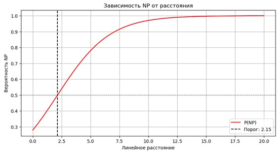

Как видно, несмотря на признанное высокое влияние линейного расстояния на референциальный выбор, в условиях короткого устного адыгского дискурса только линейного расстояния недостаточно для того, чтобы предсказать этот выбор, из-за недостаточной количественной разницы между линейным расстоянием у именной группы и нулевой формы.
1.2.2 Одушевлённость
Данные по влиянию одушевленности приведены в (таблица 7.2).
| Б1 | Б2 | Б3 | Д1 | Д2 | Д3 | |
|---|---|---|---|---|---|---|
| χ2 | 0.0 | 0.0001 | 0.0002 | 0.0097 | 0.0012 | 0.0052 |
| V | 0.307 | 0.253 | 0.273 | 0.266 | 0.250 | 0.244 |
Так как значения теста хи-квадрата в каждом из вариантов < 0.05, связь между видом и одушевленностью везде значимая, но значения коэффициента Крамера V показывает, что эта связь слабая. Следовательно, изолированно одушевленность слабо влияет на референциальный выбор. Самый большой процент неодушевленных референтов находится среди именных групп.
1.2.3 Протагонистичность
Статус протагониста часто совмещен с одушевленностью участника. Эти характеристики помогают более медленной деактивации референта в рабочей памяти ([13]), так что такие референты чаще будут выражаться нулем. Соответствующие данные по текстам из Блечепсина и Джамбечий даны в (таблица 7.3).
| Б1 | Б2 | Б3 | Д1 | Д2 | Д3 | |
|---|---|---|---|---|---|---|
| χ2 | 0.0020 | 0.0003 | 0.0072 | 0.2564 | 0.6116 | 0.8409 |
| V | 0.255 | 0.237 | 0.208 | 0.175 | 0.068 | 0.044 |
Для текстов из Блечепсина связь значима, но слабая, то есть статус протагониста действует совместно с другими факторами. Для текстов из Джамбечий связь между статусом протагониста и вида выражения не является значимой.
Интерференция других участников связана с наличием других топиков в похожей роли в трех ЭДЕ до рассматриваемого упоминания референта. В (таблица 7.4) показывается, что связь между интерференцией и референциальным выбором есть. Так как значение коэффициент Крамера V находится в промежутке 0.3-0.5, мы можем назвать эту связь умеренной, то есть интерференция сильнее всех предыдущих характеристик влияет на референциальный выбор. Однако эта связь не является сильной, следовательно, интерференция тоже работает скорее в соединении с другими характеристиками.
| Б3 | Д3 | |
|---|---|---|
| χ2 | 0.0 | 0.0 |
| V | 0.504 | 0.348 |
На (рисунок 1.4) и (рисунок 1.5) мы можем увидеть, что действительно при возникновении такой интерференции говорящий скорее будет выбирать именную группу, а не нулевую форму. В корпусе Джамбечий в таком случае иногда могут использоваться и независимые местоимения.
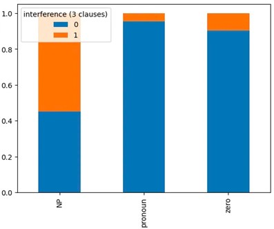

Неполная кореферентность с антецедентом возникает, когда анафора восходит к какому-то антецеденту, но их референты не полностью совпадают. Считается, что при проблемах с референции, доступность участника в рабочей памяти будет снижаться, поэтому чаще будут выражаться именными группами ([14]). Итоговые данные по этому параметру приведены в (таблица 7.5).
| Б1 | Б2 | Б3 | Д1 | Д2 | Д3 | |
|---|---|---|---|---|---|---|
| χ2 | 0.1664 | 0.0698 | 0.0119 | 0.0526 | 0.0245 | 0.0202 |
| V | 0.164 | 0.135 | 0.197 | 0.226 | 0.186 | 0.210 |
В тех случаях, когда связь оказывается значимой (в Б3, Д2 и Д3), значение коэффициента Крамера V не превышает 0.3, следовательно, признак неполной кореферентности не является определяющим фактором при референциальном выборе.
В дальнейшем вес разных факторов был соотнесен с помощью деревьев решений. В кубанском корпусе решающим фактором референциального выбора является интерференция – говорящий в первую очередь пытается избежать неоднозначности в выражении участников дискурса. Кроме того, в случаях, когда участник-протагонист не испытывает затруднений с кореферентностью, выбор между именной группой и нулевой анафорой зависит от одушевлённости протагониста, которая выступает решающим фактором. Положительные значения активации, связанные с одушевлённостью, приводят к снижению скорости деактивации участника в рабочей памяти; как следствие, одушевлённый участник чаще выражается нулевой формой.
Перспективным направлением могло бы стать сопоставление полученных данных с материалами других полисинтетических языков как внутри абхазо-адыгской семьи, так и в других языках (ср. исследования ([15]; [16]; [17]) и др.). Кроме того, аналогичные исследования могут быть приведены для письменной речи, на которую намного большее влияние оказывает русский язык.
1.3 Нестандартные конструкции с количественными числительными в речи билингвов: корпусное исследование
Конструкции с количественными числительными в русском языке имеют сложный синтаксис. С числительным в именительном падеже сочетается существительное в родительном падеже множественного числа, например, пять столов. Числительные от 2 до 4 сочетаются с существительным в форме, совпадающей с родительным падежом множественного числа, например, три стола; такие числительные и содержащие их составные (двадцать два и т.п.) далее обозначаются как паукальные. Билингвы – носители русского как неродного (второго) языка – могут использовать нестандартные конструкции с числительными (например, два стол или пять столы).
Цель данного исследования – определить факторы, влияющие на выбор билингвами формы существительного в сочетании с числительным. К возможным факторам относятся влияние родного языка, уровень коллокационности (совместной встречаемости числительного и существительного), тип числительного (собирательные vs. паукальные vs. прочие), а также возраст и уровень образования билингвов.
1.3.1 Корпусные данные
В выборку вошли данные из семи билингвальных корпусов Международной лаборатории языковой конвергенции. Исследовались следующие билингвальные разновидности русского языка (в алфавитном порядке): башкирский русский [18], бесермянский русский [19], дагестанский русский [20], карельский русский [21], марийский русский [22], цыганский русский [23] и чувашский русский [24].
Все корпуса включают непубличную спонтанную речь, записанную в лингвистических экспедициях. Записи представляют собой диалоги или (реже) полилоги между носителями русского языка (интервьюерами, которые являются квалифицированными лингвистами) и билингвами, для которых русский является вторым языком (респондентами).
На первом этапе из билингвальных корпусов были автоматически извлечены все контексты с числительными – 7 376 высказываний. Далее были удалены многочисленные контексты с порядковыми числительными, которые не могут быть определены автоматически (например, в форме двадцать пятый числительное двадцать определяется как количественное), контексты, где существительное отсутствует (в восемь поедем) или является неизменяемым (два такси). Не учитывались примеры с числительным один, существительными, обозначающими количество («тысяча», «миллион» и т.п.), а также с числительными в косвенных падежах. Кроме того, были исключены респонденты, о которых нет никакой социолингвистической информации (7 человек) или не указан родной язык (7 человек).
Таким образом для исследования было отобрано 4 196 высказываний из билингвальных корпусов. В общей сложности была проанализирована речь 181 респондента. Количество респондентов в каждом корпусе, а также их распределение по году рождения и полу представлено в (рисунок 1.6).
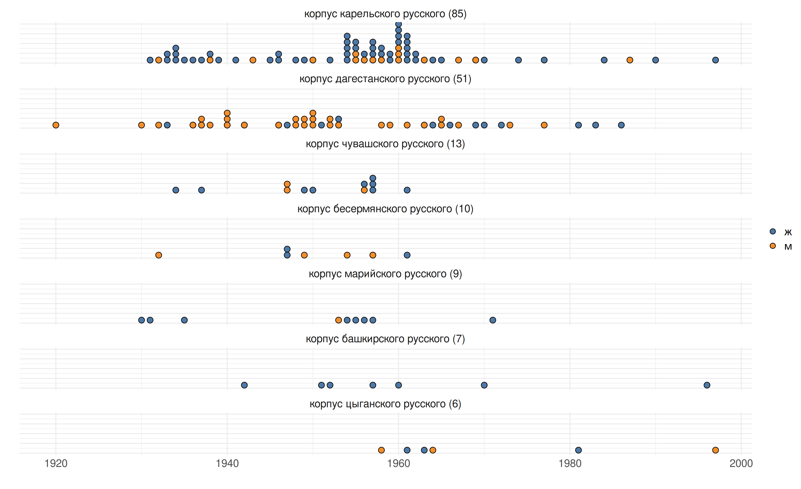
Ещё один социолингвистический параметр – уровень образования. Доля респондентов с высшим образованием колеблется от 11% в бесермянском корпусе до 55% в марийском. В 37 случаях эта информация не указана.
1.3.2 Конструкции с числительными в родных языках билингвов
Родные языки, которыми владеют билингвы, принадлежат к четырём разным языковым семьям: 1) нахско-дагестанская языковая семья (в корпусе дагестанского русского) – аварский, андийский, багвалинский, тукитинский, акушинский, ицаринский, мегебский, муиринский, цудахарский, лакский, арчинский, рутульский, табасаранский, лакский; 2) тюркская языковая семья – кумыкский и азербайджанский из корпуса дагестанского русского, а также башкирский и чувашский, представленные в одноимённых корпусах; 3) уральская языковая семья – бесермянский, карельский, марийский; 4) индоевропейская языковая семья (индоарийская ветвь) – кэлдэрарский цыганский.
Практически во всех рассмотренных языках, кроме карельского и цыганского, в конструкции с числительными существительное не имеет специальных морфологических показателей. Кроме того, насколько можно судить по имеющимся описаниям, ни в одном языке нет отличий между конструкциями с паукальными и непаукальными числительными.
В грамматиках нахско-дагестанских языков обычно отмечается, что форма существительного не маркируется, см. [25: 188] об аварском, [26: 138–139] о зиловском диалекте андийского языка, [27: 159] о багвалинском, [28: 45] об ицаринском, [Казенин 2013: 29] о лакском и [29] о табасаранском. В рассмотренных тюркских языках существительное также не маркируется по числу, как отмечено в [30: 51] и некоторых других работах. Пример из кумыкского языка: бир китап ‘одна книга’, беш китап ‘пять книг’ [31: 233]. Среди уральских языков то же касается бесермянского и марийского. Пример из марийского: ик пӧрт ‘один дом’, кандаш пӧрт ‘восемь домов’ [32: 104].
Регулярное маркирование существительного в конструкции с числительным характерно лишь для двух языков – карельского (уральская языковая семья) и кэлдэрарского цыганского.
В карельском языке в конструкции с числительными используются существительные в партитивном падеже как при паукальных, так и при непаукальных числительных: poika ‘мальчик’, kolme poiku-a ‘три мальчика’, kymmenen poiku-a ‘десять мальчиков’ [33, P. 140]
В языке цыган-кэлдэрар, интервью с которыми включены в корпус цыганского русского, числительные сочетаются с существительными во множественном числе, например: jèkh matòr-a ‘одна машина’ – dùj matòr-» ‘две машины’ [34: 464].
Таким образом, в родных языках респондентов конструкции с числительными, как правило, устроены проще, чем в русском языке. Маркирование существительных в некоторых из них возможно как дополнительный вариант в определенных типах контекстов.
1.3.3 Разметка корпусных данных
На первом этапе каждое высказывание было размечено как стандартное или нестандартное. Для дальнейшей обработки данных учитывались высказывания только тех респондентов, у которых нестандартная конструкция зафиксирована хотя бы один раз. Итоговая выборка включала 1 748 высказываний. Доля нестандартных конструкций оказалась выше всего в корпусах дагестанского русского, чувашского русского и марийского русского (см. (рисунок 1.7)).
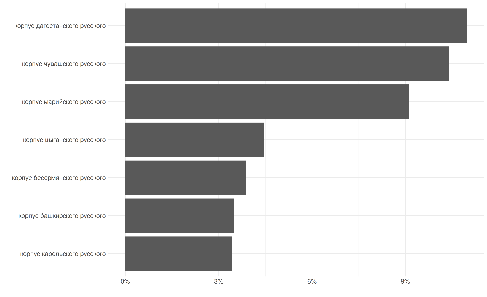
Каждый пример был снабжён социолингвистической информацией (пол, год рождения, уровень образования респондента, родной язык и языковая семья, к которой он относится). Лингвистическая разметка материалов включала несколько параметров. Отмечался тип числительного (паукальное, собирательное или иное). Указывалась лемма существительного.
Для нестандартных примеров указывалась использованная форма существительного. Учитывая, что почти во всех родных языках билингвов в конструкции с числительными существительное не маркируется ни по числу, ни по падежу, можно было ожидать в конструкциях на русском существительное именительного падежа единственного числа. Такие примеры имеются: четыре класс – лакско-русский билингв, три доярка – чувашско-русский билингв и др.. Но вместе с тем оказалось, что возможны и другие формы, например, именительный множественного числа (три ягнята – бесермянско-русский билингв, трое сыновья – марийско-русский билингв). При паукальных числительных во всех корпусах, кроме бесермянского, есть также примеры с существительными в родительном падеже множественного числа (тридцать два учителей нас было – башкирско-русский билингв). В дагестанском и башкирском корпусах при паукальных числительных также отмечены существительные в родительном падеже единственного числа (пять дня – табасаранско-русский билингв). Более подробно результаты разметки по данному параметру представлены в (рисунок 1.8). На нем нет материалов цыганского корпуса, поскольку в нём имеется лишь четыре нестандартных примера, во всех используется существительное в именительном падеже множественного числа (три девчата). В этом случае можно предполагать интерференцию с родным языком, но число примеров кажется недостаточным, чтобы с уверенностью это утверждать.
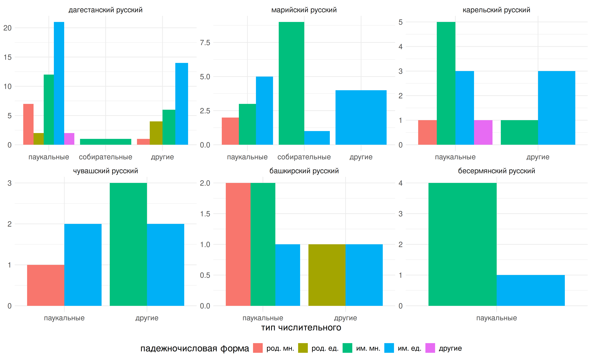
Графики в (рисунок 1.8) показывают, что во всех корпусах со всеми типами числительных преобладает использование существительного в именительном падеже. Существительные в родительном падеже встречаются в нестандартных конструкциях заметно реже. Таким образом, интерференция является не единственной причиной появления нестандартных форм в конструкциях с числительными. Такое влияние можно предполагать лишь в половине всех примеров (там, где используется существительное в именительном падеже единственного числа, а также в примерах из цыганского языка).
При разметке данных было замечено, что ряд очень частотных существительных (час, день, килограмм и т.п.) реже, чем другие, используются в нестандартной форме. Чтобы оценить влияние этого фактора был использован дополнительный параметр – коэффициент коллокационности (dice coefficient). Сначала из Национального корпуса русского языка НКРЯ была извлечена мера коллокационности для каждого сочетания числительное + существительное в исследуемой выборке. Затем все коэффициенты для одной леммы существительного были усреднены по всем числительным и объединены с основным набором данных для использования их в логистической модели.
1.3.4 Cтатистический анализ и его результаты
В качестве основного метода использовалась логистическая регрессия со смешанными эффектами. Модели были созданы в программной среде R [R Core Team 2024] с помощью пакета lme4 [35]. Модель включала следующие переменные (основные эффекты): тип числительного, коэффициент коллокационности, пол, год рождения, образование. Случайными эффектами были переменная респондент, вложенная в переменную языковая семья. Результаты статистического моделирования представлены на следующих графиках (рисунок 1.9).

Каждый график соответствует группе числительных (слева направо): собирательные, паукальные и прочие. По оси х отмечен коэффициент коллокационности (dice coefficient), по оси у – вероятность нестандартных контекстов. Цветом обозначены уровни образования: красным – высшее, синим – среднее или начальное. Как и ожидалось, вероятность нестандартной формы ниже у респондентов с более высоким уровнем образования. Определенную роль играет тип числительного: для собирательных вероятность использования нестандартной формы самая высокая (но следует учесть, что контекстов с ними в выборке было меньше всего, поэтому на графике большие доверительные интервалы). В конструкциях с высоким коэффициентом коллокационности (два часа, пять километров) вероятность нестандартной формы значительно ниже.
Далее был рассчитан обобщённый коэффициент детерминации (generalized R squared, см. [36]). Он позволяет выстроить иерархию значимости переменных, которая в данном случае выглядит следующим образом:
коллокационность > уровень образования > год рождения > тип числительного > пол
Наиболее значимой переменной оказалась коллокационность (совместная встречаемость единиц). Чем выше степень коллокационности, тем ниже вероятность появления нестандартной формы в речи билингва. Это можно объяснить с точки зрения когнитивного подхода. Высокочастотные выражения с большей вероятностью попадают в инпут билингвов, чаще успешно воспроизводятся и могут храниться в ментальном лексиконе как единые блоки. В случае с менее частотными сочетаниями неносители языка, вероятно, конструируют фразы «на ходу», что увеличивает вероятность появления нестандартных форм.
1.4 RCaucTile и PyCaucTile: плиточные карты для визуализации нахско-дагестанских языков
1.4.1 Введение
Плиточная карта –– это вид упрощённой картографической визуализации, на которой географические регионы изображаются соразмерными «плитками», чаще всего квадратами или шестиугольниками. Элементы располагаются на условной сетке координат, сохраняющей примерное взаимное расположение объектов. В настоящей работе предлагается адаптация методологии плиточных карт для визуализации языковых данных. Результатом исследования являются два программных пакета на R и Python, позволяющие создавать такие карты для восточнокавказских языков.
1.4.2 Лингвистическое картографирование
Лингвистическое картографирование широко используется в диалектологии и типологии, являясь устоявшимся инструментом для визуализации ареального распределения данных. C. R. Luebbering выделяет несколько видов лингвистических карт – точечные, ареальные, экстраполированные и гибридные, в зависимости от того, представлены ли языки отдельными точками, сплошными областями, плавными градиентами на основе нескольких точек или их комбинацией [37]. В типологических атласах, включая ставший стандартом Всемирный атлас языковых структур WALS [38], наиболее распространены точечные визуализации, в которых каждому языку соответствует одна координата, цветовое кодирование которой отражает значение признака.
В Типологическом атласе языков Дагестана [4], разработанном в Лаборатории, помимо точечных карт (см. (рисунок 1.10)) также используются экстраполированные визуализации, где один язык представлен несколькими точками, соответствующими населенным пунктам, в которых он распространен (см. (рисунок 1.11)). Оба варианта карт создаются при помощи программного пакета lingtypology, разработанного Г. А. Морозом [39].
Среди ограничений лингвистических карт отмечают условность и невозможность отражения реальной ситуации многоязычия при представлении языков как единичными точками, так и полигонами [40]. В работах R. K. Macaulay и C. R. Luebbering обсуждаются проблемы читаемости визуализаций: при избытке деталей и высокой языковой плотности карты становятся перегруженными, а распределение признака менее очевидным для восприятия [37; 41]. Эта проблема является наиболее актуальной для регионов с большим языковым разнообразием, к числу которых относится Восточный Кавказ, где на сравнительно компактной территории распространено более 50 языков из нахско-дагестанской, индоевропейской и тюркской языковых семей.
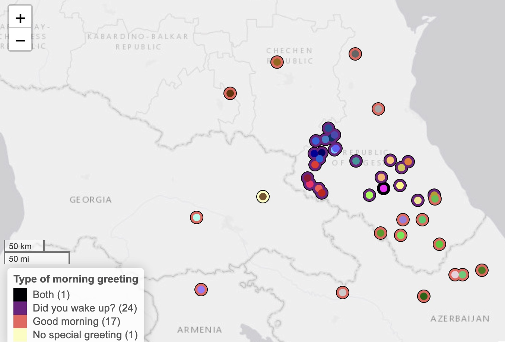
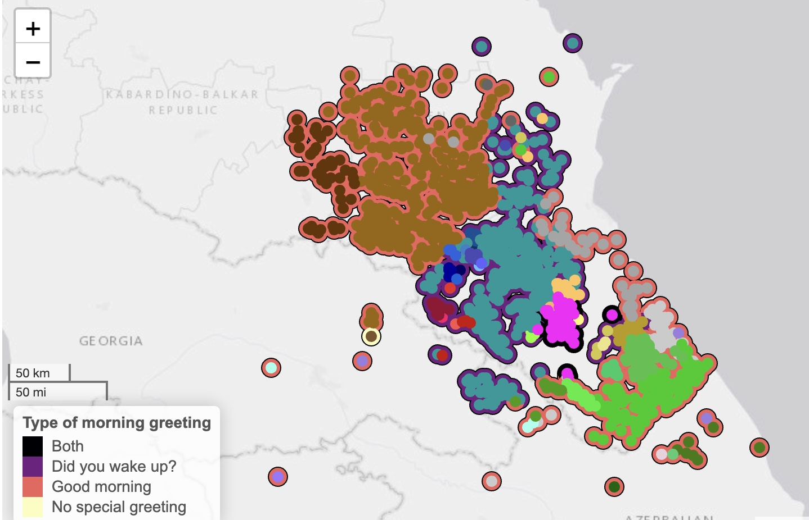
1.4.2.0.1 Плиточные карты
Плиточные карты рассматриваются в литературе в качестве альтернативы традиционным картографическим визуализациям в ситуациях, когда географическая детализация не является необходимой или даже затрудняет восприятие данных. Как отмечается в исследовании W. Meulemans и др., с возрастанием сложности данных карты, на которых сохраняется ландшафт и точное расположение объектов, становятся менее читаемыми из-за неизбежного совпадения элементов, что требует применения схематизации [43]. В регионах с высокой плотностью объектов, согласно M. Loecher и K. Ropkins, визуализации легко становятся перегруженными или страдают от наложения элементов, даже при работе с наборами данных умеренного размера [44].
В плиточных картограммах каждый географический регион представляется в виде образующих единую сетку единообразных плиток идентичного или пропорционального некоторому статистическому признаку размера [45]. Преимущество такого подхода заключается в том, что все регионы при корректном подборе размера сохраняют свою различимость: крупные регионы не преобладают в восприятии над малыми. Кроме того, строгая структура сетки систематизирует расположение элементов и облегчает сравнение данных между регионами [45], что делает плиточные карты наиболее подходящими для случаев, когда для визуализации важнее распределение признака среди объектов, чем их географическое положение.
Процесс создания плиточной карты предполагает трансформацию координат, при которой акцент смещается с точных расстояний между объектами на сохранение их смежности, взаимного расположения и глобальной позиции в рамках общей формы территории [46]. Несмотря на потерю исходной формы и ландшафта, данный тип визуализации сохраняет узнаваемость для зрителя за счет ментальной карты: как объясняется в работе G. McNeill и S. A. Hale, у зрителей в сознании обычно присутствует сложившийся ментальный образ географической зоны, что снижает необходимость в детализации карты и позволяет эффективно использовать схематизированное представление [45].
1.4.2.1 Методология
Насколько нам известно, плиточные карты ранее не применялись для визуализации языковых данных, что требует адаптации традиционных подходов. В частности, представляется нерелевантным автоматическое определение координат на основе существующих алгоритмов построения плиточных карт, таких как recmap [47], в силу ограничений таких инструментов и специфики лингвистических данных. В отличие от административных зон с четкими границами, разделяющими территорию на непрерывные участки, языковые ареалы выделяются более условно и распределяются неравномерно, образуя плотные скопления и пустые участки.
Условные координаты на сетке были определены для языков вручную на основе информации о расположении населенных пунктов, соответствующих языкам, с использованием базы данных сел Дагестана и отредактированы с учетом особенностей распределения языков в регионе. При разработке соблюдались три основных принципа, сформулированных для плиточных карт в работе Meulemans и др.: сохранение смежности и взаимного расположения объектов, узнаваемость общей конфигурации и компактность размещения [43].
Разработанные пакеты включают 56 языков, распространенных на территории Восточного Кавказа, из классификации, предложенной в Типологическом атласе языков Дагестана [4]. Цветовое кодирование на основе генеалогии также заимствовано из Атласа для обеспечения преемственности визуализаций.
1.4.3 Результаты
1.4.3.1 Техническая реализация
Отличительной особенностью разработанного инструмента является его доступность на двух языках программирования – R и Python, что расширяет возможности использования в различных исследовательских средах. Пакеты спроектированы единообразно, совпадая по структуре входных и выходных данных, названиям основных функций и логике работы. RCaucTile реализован на основе библиотеки ggplot2, являющейся стандартом визуализации данных в R. PyCaucTile использует plotnine – Python-реализацию ggplot2, позволяя создавать идентичные визуализации при помощи схожего синтаксиса.
1.4.3.2 Структура данных
В основе пакетов лежит встроенный датасет с информацией о 56 языках из Типологического атласа языков Дагестана. Набор данных включает следующие столбцы, многие из которых совпадают с данными из Атласа: - language –– название языка - branch –– ветвь языковой семьи - family –– семья - glottocode –– код языка из ресурса Glottolog - language_color –– цветовой код для отдельного языка - branch_color –– цветовой код для ветви - x, y –– условные координаты на сетке - abbreviation –– сокращенное название - примеры лингвистических признаков из Атласа (morning_greetings, consonant_inventory_size)
Помимо доступной внутри пакетов информации по двум типологическим признакам, поддерживается работа с пользовательскими данными, что является одной из главных возможностей для исследователей. Для визуализации собственных признаков необходимо подготовить таблицу, содержащую столбец с названиями языков и столбец с соответствующими им значениями признака.
1.4.3.3 Типы карт
Плиточные карты, создаваемые при помощи RCaucTile и PyCaucTile, разделяются на два основных типа в зависимости от визуализируемой информации. Цвет прямоугольника («плитки»), обозначающего язык, может отражать генеалогическую принадлежность языка или значение определенного типологического признака. Базовый шаблон карты, вызываемый ключевой функцией пакета без аргументов, включает языки на сетке координат с цветовым кодированием. Как можно заметить на (рисунок 1.12), цвета сгруппированы по языковым ветвям: нахские языки представлены коричневым цветом, андийские –– синим, лезгинская ветвь –– зеленым и так далее.

Данный шаблон задает распределение языков по умолчанию и служит основой для карт с отображением типологических признаков. В зависимости от характера признака а различаются два типа карт. Пакеты автоматически определяют характер входных данных и применяют соответствующую схему визуализации.
Категориальные карты используют дискретную цветовую схему для качественных признаков, где каждое значение кодируется отдельным цветом. На (рисунок 1.13) представлена плиточная карта на основе встроенного признака из исследования C. Naccarato и S. Verhees, классифицирующего языки по стратегиям утренних приветствий [42]. Карта демонстрирует ареальное распределение трех типов: вопросы о пробуждении, приветствия формата доброе утро, а также присутствие обеих стратегий. Языки, для которых данные по визуализируемому признаку отсутствуют, отображаются светло-серым цветом.

В картах на основе числовых признаков применяется градиентная шкала для количественных данных, где интенсивность цвета связана с величиной значения.
В (рисунок 1.14) отображено распределение количества согласных фонем в инвентаре согласно данным из Типологического атласа языков Дагестана [48]. Градиентная визуализация позволяет быстро оценить ареальное распределение и выявляет языки с наиболее развитыми консонантными системами, представленные светлыми оттенками.

Пакеты предоставляют возможность настройки визуализаций для адаптации под формат и цели исследования. Значения признаков могут отображаться непосредственно на плитках рядом с названиями языков, как показано на (рисунок 1.14), что особенно эффективно для количественных данных и позволяет быстро оценивать и сравнивать значения. Доступно изменение параметров цветовых палитр, заголовков и легенды, а также модификация языкового шаблона с исключением и сменой названий выбранных языков, что является актуальным при работе с другими генеалогическими классификациями.
1.4.4 Заключение
Плиточные карты рассматриваются как альтернативный подход к отображению лингвистических признаков, но не являются полноценной заменой традиционным типологическим картам. Такой метод смещает акцент с географической точности на распределение признака среди языков, может применяться для микротипологических исследований со сравнительным анализом. Плиточные карты представляются актуальными для территорий с высокой языковой плотностью, где традиционные карты сталкиваются с проблемой совпадения элементов и перегруженности. Это создает возможность адаптации разработанной методологии для картографирования других регионов с большим языковым разнообразием.
1.5 Опущение предлогов в речи русско-чувашских билингвов
1.5.1 Введение
Обусловленные контактом нестандартные грамматические явления в русской речи билингвов из разных регионов России изучались многими исследователями. [49] предложили краткий обзор нестандартных явлений в дагестанском варианте русского языка, [50] фокусируется на грамматических особенностях речи эрзянских билингвов, [51] исследуют русскую речь энцев. Некоторые исследования посвящены определенной области грамматики (см. в [52] обзор фонетических и морфологических особенностей в русской речи носителей эрзянского и мокшанского языков) или специфическим нестандартным явлениям, например, нестандартному гендерному маркированию (см. в [53] о подверженном контактному влиянию русском языке Северной Сибири и Дальнего Востока) или выпадению предлогов (см. [54] о дагестанском русском языке).
Данное исследование затрагивает русскую речь чувашских билингвов (далее – чувашский русский язык), которая является примером разновидности русского языка, находящегося в контакте с тюркским языком. Существует множество описаний чувашского языка, в том числе [55], [56], [57], [58]. Особое значение для данного исследования имеет работа [59], в которой автор перечисляет различные грамматические явления в чувашском языке и пытается сопоставить их с грамматическими явлениями в русском языке; эта стратегия также прослеживается в [52]. Русский язык, на котором говорят в Чувашии, уже был исследован в работе [60], где были рассмотрены фонетические, морфологические и лексические особенности лекта. Мызников рассматривает эту разновидность русского языка с диалектологической точки зрения и не исследует конкретные явления [60]. Насколько нам известно, это единственная опубликованная работа, описывающая чувашский русский язык; более того, нет информации об исследованиях в области морфосинтаксиса чувашско-русского языка. Эта область особенно интересна, учитывая различия между морфосинтаксисом в славянских и тюркских языках, которые потенциально могут привести к нестандартным явлениям. На основе данных из корпуса русской речи Чувашии [24] мы пытаемся выяснить, какие факторы влияют на явление опущения предлогов в чувашском русском и связаны ли эти факторы с языковым контактом.
1.5.2 Методы и данные
Феномен опущения предлогов хорошо изучен для различных языков. Это явление часто упоминается в связи с новогреческим, где опущение предлога se ‘в’ встречается в определенных локативных и указательных контекстах [61]. Тем не менее, в контактных вариантах русского языка это явление не ограничивается такими контекстами: там опущение предлогов встречается также во временных и комитативных предложных группах. [62] утверждают, что в английском языке предлоги at (локация) и to (направление), в отличие от from (источник), часто опускаются. Обсуждая опущение предлогов в русском языке, на котором говорят в Дагестане, [54] представляют следующий список типичных объяснений опущения предлогов:
- Фонотактические ограничения, с которыми сталкиваются носители второго языка (L2);
- Морфосинтаксическая интерференция с другими языками;
- Отсутствие семантической маркированности;
- Исключительная синтаксическая структура.
Авторы опровергают возможность того, что пункты 1 и 4 имеют отношение к их данным; тем не менее, мы включили все представленные объяснения в методологию исследования.
Данное исследование основано на данных, извлеченных из корпуса русского языка, на котором говорят в Чувашии [24]. Он состоит из интервью с 14 респондентами. Интервью проводились в деревне Малое Карачкино, Чувашия. Для респондентов первым языком (L1) является верхний диалект чувашского языка, вторым (L2) – русский язык. В описании корпуса говорится, что овладение L2 респондентами произошло в подростковом или раннем взрослом возрасте [24]. Объем корпуса оценивается в 36 140 токенов, не считая речи интервьюеров. Корпус позволяет выполнять базовый поиск по токенам, леммам и тегам, а также выполнять поиск по CQL. Каждый результат поискового запроса сопровождается социолингвистической информацией о говорящем: пол, год рождения и уровень образования.
Корпус русской речи Чувашии [24] транскрибирован в соответствии со стандартным письменным русским языком, поэтому нестандартные явления, в том числе опущение предлогов, не всегда отражаются в транскрипции. Таким образом, все предложные группы были извлечены двумя способами: путем автоматического и ручного (поиск предложных групп с опущенными предлогами в текстах) извлечения всех контекстов с предлогами. Затем соответствующие фрагменты аудиозаписей были прослушаны. Случаи, в которых было невозможно определить, имело ли место опущение предлога или нет (из-за плохого качества звука, фонового шума или других технических проблем), были удалены из выборки. Наконец, был получен набор данных, состоящий из 2529 контекстов. Все контексты в базе данных были дополнительно аннотированы в соответствии с параметрами, представленными на рисунок 1.15.

Столбцы “лемма следующей словоформы” и “коэффициент коллокационности” имеют особо важное значение для выявления связи между выпадением предлога и степенью сочетаемости с ним существительного в предложной группе. Идея о том, что нестандартное явление реже встречается в конструкциях, в которых слова часто встречаются вместе (например, в устойчивых би-граммах), была выдвинута [63] при исследовании нестандартных числительных в билингвальных разновидностях русского языка. Авторы утверждают, что очень часто встречающиеся конструкции, скорее всего, будут храниться в виде целых единиц в ментальном лексиконе, поэтому носители L2 русского реже используют нестандартные формы в контексте частых сочетаний числительных и существительных. Чтобы проверить эту гипотезу на нашей выборке, мы использовали данные Национального корпуса русского языка1, который использует коэффициент dice в качестве меры коллокационности ([36]). В тех случаях, когда словосочетание не было найдено в НКРЯ, было установлено значение коэффициента коллокационности 0.
1.5.3 Результаты
Всего было рассмотрено 2529 предложных групп, из которых в 340 (13,44%) предлог был опущен. Как показано на рисунок 1.16, не все предлоги имели тенденцию к выпадению. Только семь предлогов были пропущены хотя бы один раз: в, у, на, с, из, до, через. Последние два предлога были опущены в выборке только по одному разу. Также стоит отметить, что в и произносится, и опускается значительно чаще, чем другие предлоги: 291 (33,64%) из 865 предлогов в были опущены (см. рисунок 1.17).
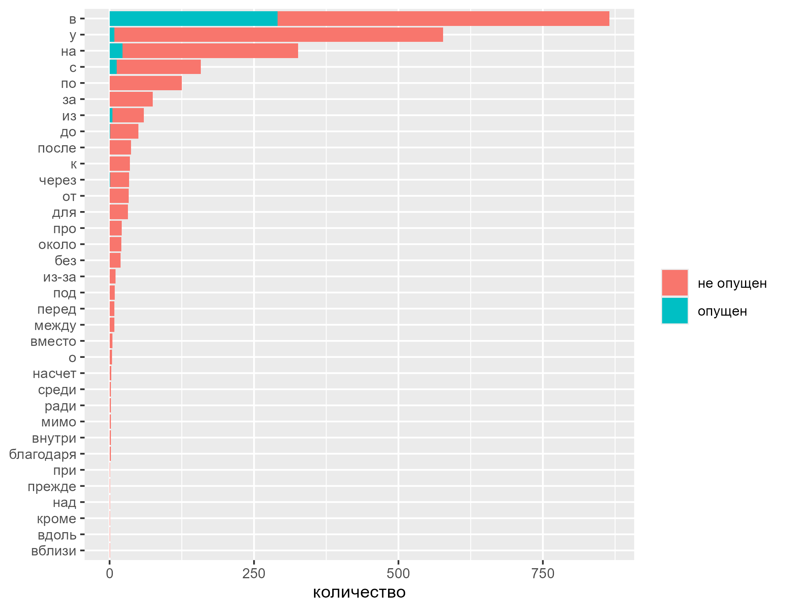

Данные о предлогах, которые не выпадают, мы посчитали избыточными, поэтому последующий анализ был проведен на основе набора данных, который включает только те предлоги, которые имеют тенденцию к выпадению; этот набор данных состоит из 2069 предложных групп.
Чтобы выяснить, какие из факторов, приведенных на рисунок 1.15, влияют на опущение предлогов, мы мы применим логистическую регрессионную модель со смешанными эффектами. Для построения более оптимальной модели следует уменьшить число категориальных факторов со множеством переменных: начальный звук следующей словоформы, ее падеж, семантика предложной группы.
Выпадение простых неслоговых предлогов как в в билингвальных разновидностях русского языка часто объясняется влиянием фонотактических ограничений L1. Интересно, что в чувашском русском также есть слоговые предлоги, которые имеют тенденцию к выпадению (у, до). Хотя это указывает на меньшую значимость фонотактики, все еще остается вероятность влияния ограничения на выпадение неслоговых предлогов.
Следует посмотреть на распределение начальных звуков в следующих после предлога словоформах. На рисунок 1.18 иллюстрируется отношение числа примеров с опущением предлога к числу примеров без опущения. Существует два способа анализа рисунок 1.18. Рассматривая вертикальные линии (предлоги), можно сделать вывод, что некоторые предлоги (в частности, в) имеют одинаковую вероятность выпадения в контексте практически любой фонемы, представленной в данных. Большинство предлогов имеют определенные фонемные предпочтения: для у это [i], для с это, что неудивительно, [z], для на это [tʃʲ], для из – [s] и [u]. Еще один способ взглянуть на рисунок 1.18 – по горизонтали: более светлые линии указывают, в контексте каких фонем чаще всего выпадают предлоги. Согласно рисунку, линии с наиболее светлыми фрагментами соответствуют взрывным звукам: [b], [p]/[pʲ], [d]/[dʲ].
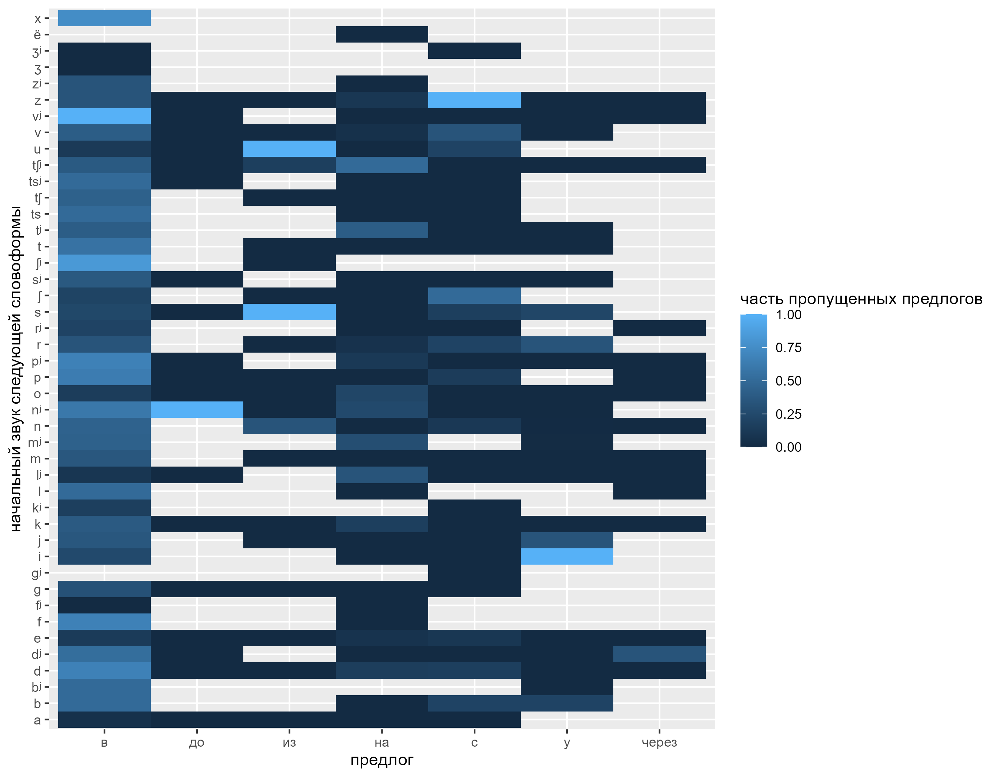
Итак, во-первых, важно добавить в логистическую регрессию параметр самого предлога, поскольку некоторые предлоги имеют тенденцию выпадать в контексте любой фонемы; игнорирование этого факта привело бы к менее точным вычислениям. Во-вторых, вместо того, чтобы добавлять в регрессию множество категориальных переменных, я добавлю только бинарную переменную: взрывной звук далее или нет.
Еще один категориальный фактор с большим количеством переменных – это падеж следующей за предлогом словоформы. На рисунок 1.19 именительный падеж выделяется больше всего среди других: примерно в трети всех примеров, содержащих именительный падеж, также присутствует опущение предлога. Несмотря на то, что в большинстве пропущенных примеров используется локатив, это может быть просто связано с частотностью падежа.
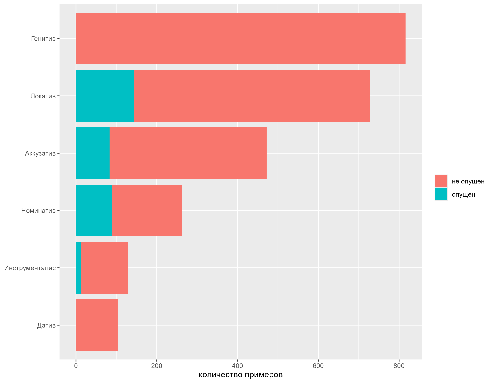
Наконец, было принято решение преобразовать категориальный фактор семантики в бинарный фактор ‘неопределенная семантика’/‘определенная семантика’. Таким образом проверяется корреляция между отчетливостью семантики контекста и вероятностью пропуска предлога в указанном контексте. Распределение семантики предложных групп показано на рисунок 1.20
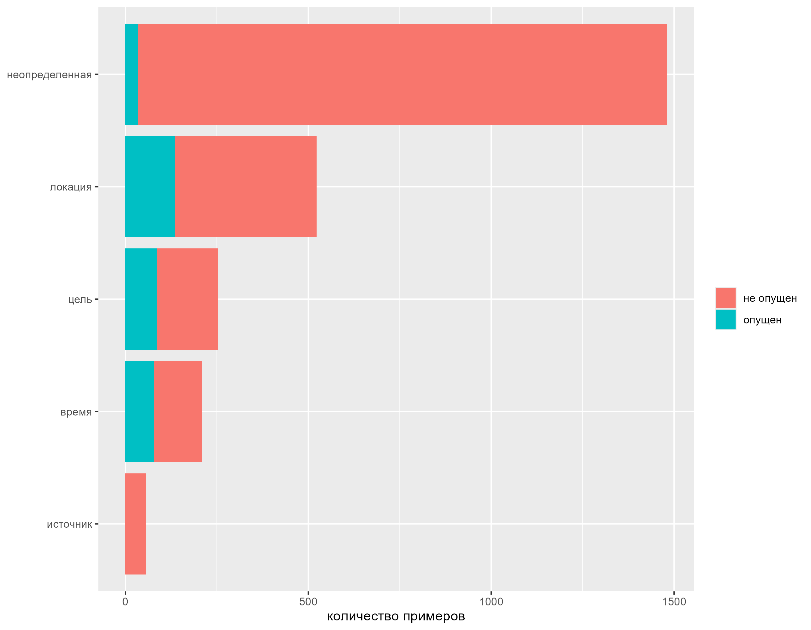
1.5.3.1 Статистическое моделирование
Чтобы оценить значимость выделенных факторов, мы применили логистическую регрессионную модель со смешанными эффектами, используя пакет R (R Core Team 2024) lme4 [35]. Следуя процедуре пошагового выбора переменных в обратном порядке [64], мы пришли к оптимальной модели (см. таблица 7.6).
| Переменная | Тип переменной | Тип эффекта |
|---|---|---|
| предлог | категориальная | фиксированный |
| спикер | категориальная | случайный |
| возраст | непрерывная | фиксированный |
| образование (лет) | непрерывная | фиксированный |
| семантика неопределенная | бинарная | случайный |
| начальный звук следующей словоформы взрывной | бинарная | случайный |
| падеж следующей словоформы Именительный | бинарная | фиксированный |
| следущая словоформа имеет стандартное падежное маркирование | бинарная | фиксированный |
| коэффициент коллокационности | непрерывная | фиксированный |
Факторы, которые оказались значимыми, представлены в таблица 7.7.
| Фактор | Уровень значимости |
|---|---|
| предлог в | p < 0.05 |
| образование (лет) | p < 0.1 |
| начальный звук следующей словоформы взравной | p < 0.000 |
| коэффициент коллокационности | p < 0.05 |
| следущая словоформа имеет стандартное падежное маркирование | p < 0.000 |
| падеж следующей словоформы Именительный | p < 0.000 |
| семантика неопределенная | p < 0.01 |
1.5.3.2 Выводы
Опущение предлога в в чувашском русском не следует стандартным социолингвистическим тенденциям (например, в описанных данных пожилые/менее образованные носители языка не используют нестандартный вариант чаще, чем другие). Более того, факторы, которые увеличивают или уменьшают вероятность выпадения для большинства предлогов, – например, начальный звук следующей за предлогом словоформы – не влияют на выпадение в. Полученные данные подтверждают гипотезу о том, что фонотактические ограничения и отсутствие семантической маркированности являются причиной выпадения некоторых предлогов в чувашском русском языке. Аналогичные факторы, влияющие на опущение предлогов, были выявлены в работе [54].
Интересно, что некоторые единичные примеры, мотивация которых неясна, следуют общим тенденциям чувашской русской морфосинтаксической системы (например, предлоги, которые были опущены только один раз, были опущены в контексте семантики направления или времени). Другими словами, носители чувашского русского языка распространяют тенденции, которые изначально были мотивированы контактом или неполным усвоением L2, на новые контексты. Это может свидетельствовать о динамичности морфосинтаксической системы чувашского русского языка.
1.5.4 Заключение
Работа, проведённая лабораторией в 2025 году, развивает перспективы использования квантитативных методов в теоретической и типологической лингвистике. Корпуса текстов на малых языках России и на нестандартных разновидностях русского, собранные и поддерживаемые сотрудниками лаборатории, нашли применение в корпусных исследованиях отдельных языковых явлений. Объектомизучения стали не только данные внутри отдельных корпусов, но и сравнение данных разных корпусов билингвального русского между собой. Использование этих результатов многолетней работы лаборатории позволило глубже изучить некоторые отличительные черты в речи русских билингвов (опущение предлогов, нестандартные конструкции с числительными). Корпуса текстов на адыгских языках, собранные в рамках экспедиций НИУ ВШЭ, помогли исследовать дискурсивные явления в этих языках и так же сравнить между собой данные разных идиомов. Многолетний проект ареально-типологических исследования языков Кавказа пополнился как непосредственно типологическим исследованием новой темы (императивные междометия), выявившим генеалогические и ареальные закономерности, так и методологическим новшеством в виде компьютерных инструментов RCaucTile и PyCaucTile, которые позволяют более оптимально визуализировать ареально-типологические данные. Все эти исследовательские работы используют точные методы для изучения языковой конвергенции (свойства ареала, речь билингвов) и смежных языковых явлений.
1.6 Список глосс
abs — absolutive; cvb — converb; dat — dative; imp — imperative; in — in a container; it — itive; pfv — perfective; pl — plural; prf — perfect; sg — singular; take —
https://ruscorpora.ru/.↩︎